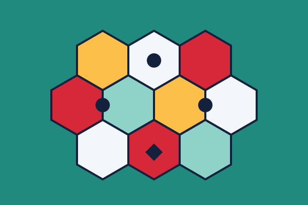
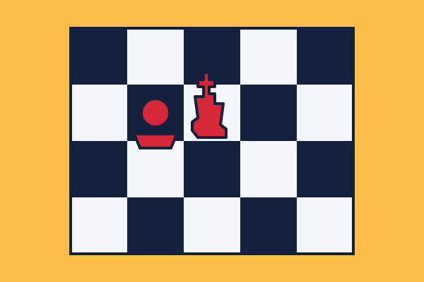

Estratégia
Jogos em que cada decisão pesa: negociar, construir e planejar vários turnos à frente.
O Rodada Extra é um blog para quem gosta de reunir gente em volta de uma mesa. Aqui você encontra indicações de jogos de tabuleiro, resumos de regras e ideias para escolher o jogo certo para cada ocasião.

Cada seção reúne jogos de um mesmo estilo, com a ideia central, o número de jogadores e a duração média das partidas. A proposta é ajudar iniciantes a começar e dar novas opções para quem já joga há tempo.
Acompanhe os três conteúdos em destaque abaixo e clique nas imagens para abrir cada página. Se tiver uma sugestão de jogo, use a página de Contatos.

Jogos em que cada decisão pesa: negociar, construir e planejar vários turnos à frente.
Jogos rápidos, fáceis de explicar e feitos para rir junto com a mesa inteira.

Os jogos que atravessaram gerações e continuam valendo uma partida hoje.